| SOURCE | TITLE| IMAGE MATCH | click to source page |
| eBay UK | Belgium 1953-1972 SG#1456, 2f50 King Boudouin Used #E85705 | eBay UK |  |
| HipStamp | Belgium 454: 2.50f King Baudouin, used, VF | Europe - Belgium & Colonies, General Issue Stamp / HipStamp | 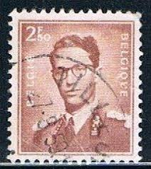 |
| eBay | BELGIUM 454i - King Baudouin "1957 Yellow Brown" (pf42659) | eBay | 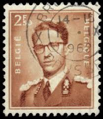 |
| eBay | Gray Used Belgian & Colonies Stamps for sale | eBay | 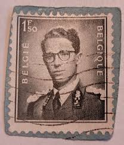 |
| eBay | 2 F 50 Belgium stamp - see scan | eBay | 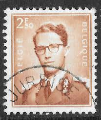 |
| eBay | Belgium - 1957 - King Baudouin - New values - 2.50 Fr - Used - #2 | eBay | 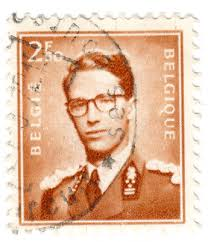 |
| eBay | Brown Postage Stamps for sale | eBay | 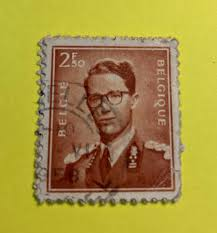 |
| eBay UK | Belgium 1953-1972 SG#1456, 2f50 King Boudouin Used #E85706 | eBay UK | 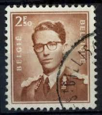 |
| World Stamps Project | Philately of Belgium: Varieties of Postage Stamps – World Stamps Project | 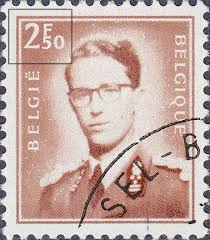 |
| Find Your Stamps Value | King Baudouin 2.50fr Red brown stamp price, value | 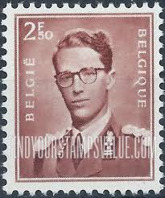 |
| eBay | Belgian Decimal Postage Stamps for sale | eBay |  |
| HipStamp | Ozzy1 / HipStamp | 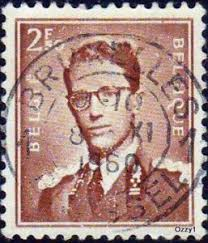 |
| HipStamp | Belgium #454 King Baudouin; Used | Europe - Belgium & Colonies, General Issue Stamp / HipStamp | 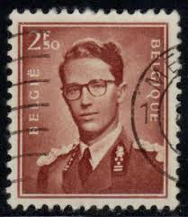 |
| allnumis.com | 2,50 Francs 1957, King Baudouin I - Belgium - Stamp - 8425 | 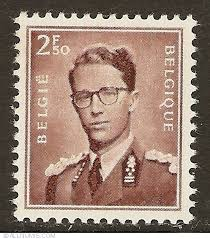 |
| eBay Australia | Belgium - 1962 - King Baudouin - New value - 4.50Fr - #2132 | eBay Australia | 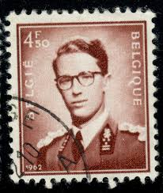 |
| Amazon.com | Amazon.com: Belgium 1075x-1076x (Complete.Issue.) unmounted Mint/Never hinged ** MNH 1957 Baudouin (Stamps for Collectors) : Toys & Games | 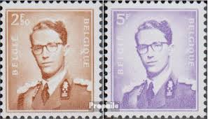 |
| HipStamp | Belgium 454: 2.50f King Baudouin, used, F-VF | Europe - Belgium & Colonies, General Issue Stamp / HipStamp | 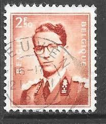 |
| HipStamp | Belgium 458: 4.50f King Baudouin, used, F-VF | Europe - Belgium & Colonies, General Issue Stamp / HipStamp | 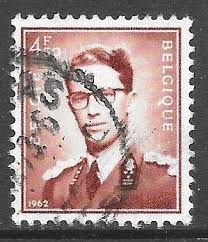 |
| HipStamp | Belgium # 458 - King Baudouin - 4.50Fr. - used [BRN11] | Europe - Belgium & Colonies, General Issue Stamp / HipStamp | 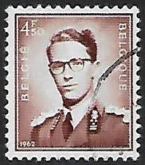 |
| HipStamp | Belgium 458 King Baudouin 1962 | Europe - Belgium & Colonies, General Issue Stamp / HipStamp | 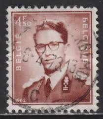 |
| Find Your Stamps Value | King Baudouin 3.50fr Bright yellow green stamp price, value | |
| eBay | Belgian Gray Used Belgian & Colonies Stamps for sale | eBay | 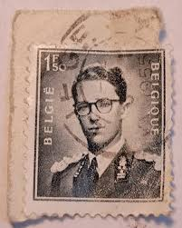 |
| Mystic Stamp Company | 458 - 1962 Belgium - Mystic Stamp Company | 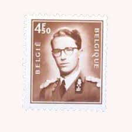 |
| eBay UK | F/G (Fair/Good) Used Belgian & Colonies Stamps for sale | eBay UK | 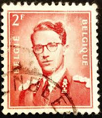 |
| Colnect | Belgium : Stamps [Year: 1969] [1/12] : Colnect 📮 | 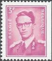 |
| eBay | Belgium King Baudouin in Military Uniform Coronation stamp 1951 MNH CV $20 A-2 | eBay | 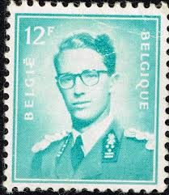 |
| Dreamstime.com | Stamp printed by Bulgaria editorial photography. Image of aged - 104896482 | 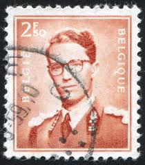 |
| OnlineStampShop | Belgium Postage Stamps | 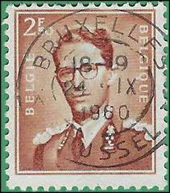 |
| Alamy | 1960s 1970s portrait man hi-res stock photography and images - Alamy | 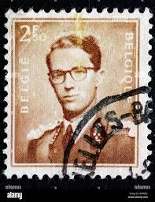 |
| Dreamstime.com | Leader Brown Stamp Stock Photos - Free & Royalty-Free Stock Photos from Dreamstime | 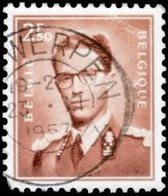 |
| Shutterstock | 816 Baudouin Belgium Royalty-Free Images, Stock Photos & Pictures | Shutterstock | 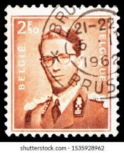 |
| Shutterstock | 1+ Thousand Note Of Belgium Royalty-Free Images, Stock Photos & Pictures | Shutterstock | 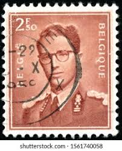 |
| Dreamstime.com | King Baudouin and Queen Fabiola Editorial Image - Image of stamp, kingdom: 95095115 | 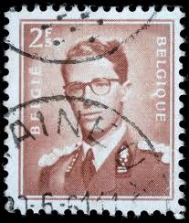 |
| Find Your Stamps Value | King Baudouin 6.50fr Gray stamp price, value | 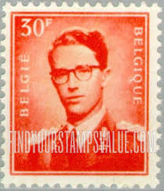 |
| lastdodo.com | King Baudouin 30 (1958) - Belgium - LastDodo | 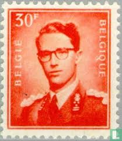 |
| Dreamstime.com | 201 Portrait King Baudouin Stock Photos - Free & Royalty-Free Stock Photos from Dreamstime | 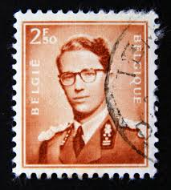 |
| belgianstamps.eu | belgian stamps Definitive issue Definitive issue - Portrait King Boudewijn with glasses | 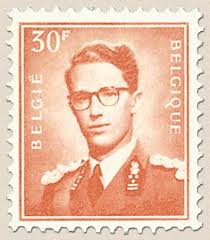 |
| HipStamp | BELGIUM 1953-72 4.50fr Dark Red Brown King Baudouin Portrait Issue Sc 458 MNH | Europe - Belgium & Colonies, General Issue Stamp / HipStamp | 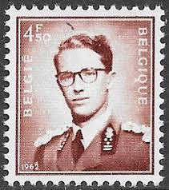 |
| Alamy | Belgium stamp hi-res stock photography and images - Alamy |  |
| Find Your Stamps Value | Official: King Baudouin 2fr Blue green stamp price, value | 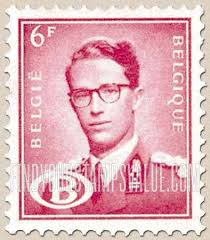 |
| ebid.net | Belgium stamps 1953 - 2f red - King Baudouin - used on eBid United Kingdom | 204460837 | 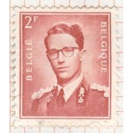 |
| Alamy | Old belgium postage stamp hi-res stock photography and images - Alamy | 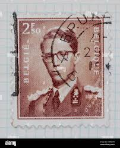 |
| eCRATER | Belgium Postage Stamp 1953 Scott# BE 452 Used 2 fr King Baudouin M |  |
| Belgium (59) 1957 King Baudouin |  | |
| Shutterstock | Postzegel Belgie: Over 4,843 Royalty-Free Licensable Stock Photos | Shutterstock | 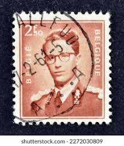 |
| Colnect | Belgium : Stamps [Year: 1972] [1/17] : Colnect 📮 | 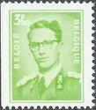 |
| HipStamp | Belgium, 1953, King Baudouin, 1.50f, used | Europe - Belgium & Colonies, Stamp / HipStamp | 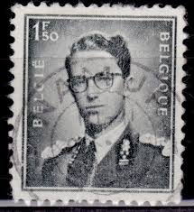 |
| Alamy | Postage stamp printed in belgium hi-res stock photography and images - Alamy | 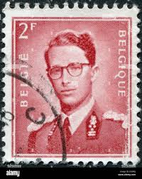 |
| Alamy | BELGIUM - 1958: A stamp printed in Belgium, shows Baudouin I of Belgium Stock Photo - Alamy | 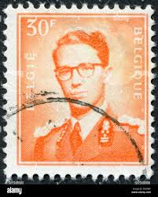 |
| HipStamp | Belgium 453 Used King Baudouin 2 1953 (BP63225) | Europe - Belgium & Colonies, General Issue Stamp / HipStamp | 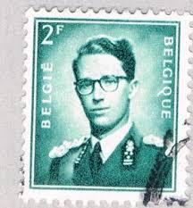 |
| Alamy | Baudouin of belgium hi-res stock photography and images - Alamy | 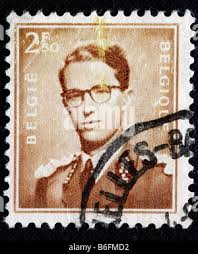 |
| HipStamp | Belgium 451: 1.50f King Baudouin, used, VF | Europe - Belgium & Colonies, General Issue Stamp / HipStamp | 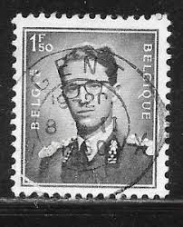 |
| Find Your Stamps Value | King Baudouin 3fr Rose lilac stamp price, value | 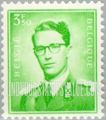 |
| Colnect | Belgium : Stamps [Year: 1966] [1/16] : Colnect 📮 | 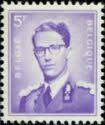 |
| HipStamp | Belgium Sc#M1 MH/Unused, , King Baudouin, Military (1967) | Europe - Belgium & Colonies, Military Stamp / HipStamp | 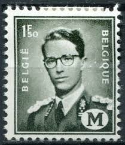 |
| Shutterstock | Postage Stamp Depicting Belgian Monarch Baudouin Stock Photo 2716108077 | Shutterstock | 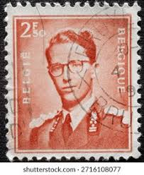 |
| Shutterstock | 3+ Thousand Dutch Post Stamp Royalty-Free Images, Stock Photos & Pictures | Shutterstock |  |
| Dreamstime.com | 507 Belgium King Postage Stock Photos - Free & Royalty-Free Stock Photos from Dreamstime | |
| eBay | Belgian Black Belgian & Colonies Stamps for sale | eBay | |
| All Numis | Stamps Catalog - List of stamps for King Baudouin I, Belgium |